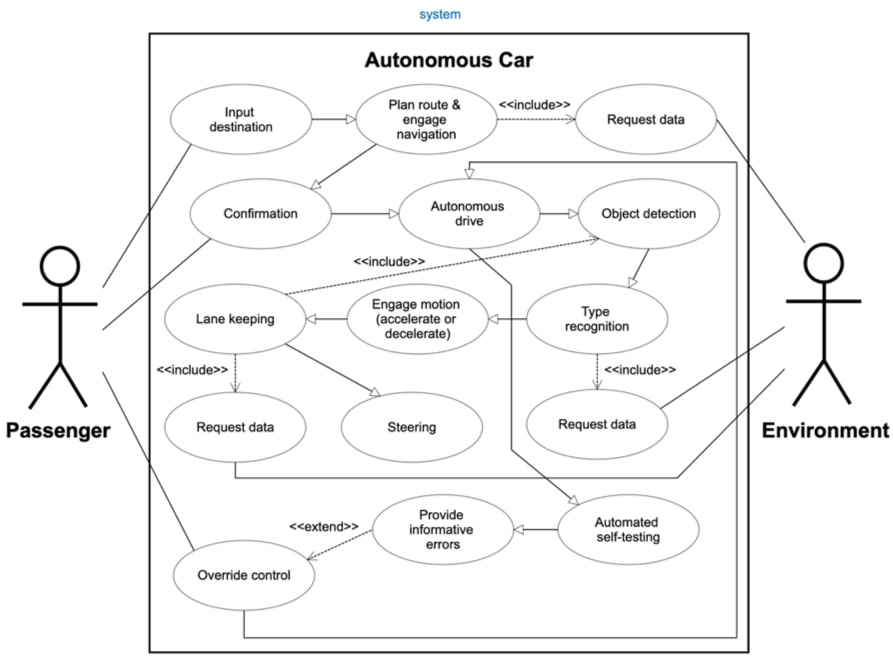
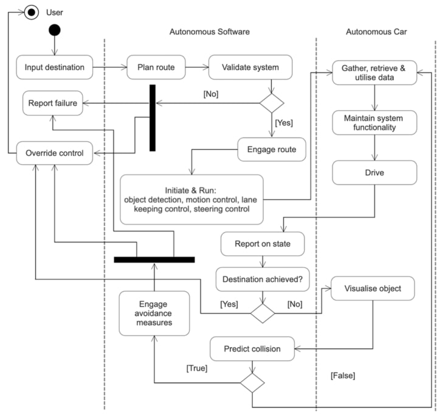
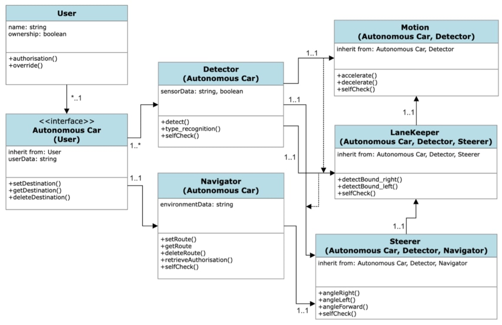

Assignment 1 & Assignment 2
Assignment 1 - System Design
Background Research Terms & Justifications of Use| Research Term | Reason For Use |
|---|---|
| autonomous | To understand what classifies as ‘autonomous’ and therefore, it’s requirements. |
| driverless | To understand the interaction between user and interface in this context. |
| interface | To understand the point of interaction between user and software. |
| navigation | To understand the requirements of the system component that must behave as a primary decision-maker. |
| detection | To understand the interaction between the software and the environment. |
| obstacle | To understand how the software will apply computer visualisation. |
| avoidance/mitigation | To understand how the system will react to the environment it interacts with. |
UML Models of System Design & Operation
Use Case Diagram:

Activity Diagram:

Class Diagram:

Sequence Diagram:

State Machine Diagram:

Rationale
The system design defined above utilising 5 UML (unified modelling language) diagrams outlines in full the software system to be developed for an
autonomous car. It will be built utilising object-oriented programming (OOP) in Python 3 and the VSC (visual studio code) environment. Compiled, the
system design defines 2 actors on the system; the user and the environment. Furthermore, the system components it defines are an interface, a detector
and a navigator unit and then a motion, a lane keeping and a steering controller. In general, the chronology of this description defines the ‘flow’
or hierarchy of the system and thus, it’s intrarelationships and inheritances. Of course, self-testing operations will be incorporated throughout the
software to ensure safe running and as a requirement of developing quality code. Feedback loops will be present all throughout.
This is the design because although the general function of an autonomous car is to arrive to a destination with user input being exclusively that of
an initial instruction, the system must be compartmentalised and it must be self-informing and the nature of this action must be continual. The system
must be self-informed by its own components and their intrarelationships and their interrelationship with the environment.
Data structures will retain the data that the system can retrieve. The nature of the system design means it has already provisioned the implementation of
data structures. These will be lists, stacks, queues and dictionaries. Of course, discretional to obstacles and realisations encountered during the
development process, lists will potentially store data relating to user input and interaction, queues will potentially store data as it relates to the
software’s understanding of its instantaneous environment, stacks will potentially store data relating to logging of self-testing results and dictionaries
will potentially store paired data values of any given navigational step and its associated driving action.
The front-end of the software will allow the user inputs. These will be minimal of course owing to the requirement of autonomy. Although, the user will be
required to enter a destination, confirm it and override the system to take control if needed. Prompts will sufficiently inform the user of their options,
the software’s actions and provide informational errors and warnings during operation. Therefore, the user will have the responsibility of instructing the
primary attribute the system will seek to achieve (the destination).
The back-end of the software system will generate and collect attributes that represent the wider environment. These will inform the system continually and
thus, the path to achieve the primary attribute inputted by the user. In conjunction with the primary attribute, the attributes collected by the system will
instruct drive and ultimately, if user override is needed as informed by errors. The attributes collected by the system will include, data relating to obstacles,
relationship with obstacles, position and relationship with position. These points of data retrieval by the system are defined in the UML models constructed.
Ultimately, this system design endeavours to implement robotic functionality that will achieve an instruction inputted by the user. Therefore, the system will
be built whilst prioritising, the concepts of computer visualisation, at least at a low level because OOP does not allow an actual implementation of this.
References
Betz, J., Wischnewski, A., Heilmeier, A., Nobis, F., Stahl, T., Hermansdorfer, L. & Lienkamp, M. (2019) ‘A software architecture for an autonomous race car’. IEEE
Vehicular Technology Conference, pp. 1-6. DOI: https://doi.org/10.1109/VTCSpring.2019.8746367
Fayjie, A., Hossain, S., Oualid, D. & Lee, D. (2018) ‘Driverless car: Autonomous driving using deep reinforcement learning in urban environment’. 15th
International Conference on Ubiquitous Robots, pp. 896-901. DOI: https://doi.org/10.1109/URAI.2018.8441797
Fouad, A.M., Sharkawy, R.M. & Onsy, A. (2019) ‘Fixed obstacle detection for autonomous vehicle’. International Conference on Power Electronics and Renewable Energy,
pp. 217-221. DOI: https://doi.org/10.1109/CPERE45374.2019.8980124
Gaikwad, P., Pillai, A., Bangera, A. & Aamer, N., (2022) ‘Traffic sign recognition’. International Journal of Advance and Innovative Research, 9(2), pp. 36-43.
Reddy, P., (2019) ‘Driverless car: software modelling and design using Python and Tensorflow’.
Singh, N., Srivastava, M., Mohan, S., Ali, A., Singh, V. & Singh, P. (2023) ‘Self-driving car: Lane detection and collision prevention system’. International Conference
on Advanced Communication and Intelligent Systems, pp. 549-562. DOI: https://doi.org/10.1007/978-3-031-25088-0_49.
Zhou, Z. & Sun, L. (2019) ‘Metamorphic testing of driverless cars’. Communications of the ACM, 62(3), pp.61-67. DOI: https://doi.org/10.1145/3241979.
Assignment 2 - System Implementation
Commentary & README for Autonomous Car SoftwareI. Application Execution Instructions
- Open the Autonomous Car software
- Follow the software’s prompts
II. Solution Implemented
The solution implemented was an object-oriented python 3 program. It commits8 classes and 18 functions. 2 modules were imported (‘random’ and ‘time’). The functionality implemented included, user name retrieval, user authorisation, user override, main interface functionality, getting destination, saving a destination, deleting a destination, setting a route, executing a route, environment detection, error detection, maintaining velocity, accelerating & decelerating, detecting right & left lane bounds, turning right & left and automated testing. Various attributes defined various statuses within the system and different data structures were used to store default and generated data. See below.
The implementation of list, queue, stack and dictionary data structures:
1. List
Lists were used to store information including pre-saved destinations and custom added destinations the user could select from. Also, lists were used to store functions that the system would randomly select from whilst generating the route to be executed to achieve the destination. A list called ‘randomiser’ is the effective parent that contains the functions relating to 3 smaller lists that respectively contain, motion (‘motion_options’), position (‘position_options’) and direction (‘direction_options’) options.
2. Queue
A queue is inputted into by the system with the steps the system will execute to achieve the destination. First the queue called ‘route’ is empty. Then utilising looping and randomisation, each step to be executed is appended into the queue and then when the route is executed the queue is accessed FIFO (‘first in first out’) and outputted in this manner.
3. Stack
A stack is utilised to store the reports on the system status during runtime. The ‘error_bank’ is filled with positive reports of “System running...” until an error occurs and then the system will check if the ‘top value’ in the stack is an error. If true, the system will throw the appropriate error and react accordingly.
4. Dictionary
A dictionary is used to store information regarding the objects/obstacles that can be encountered. Within the dictionary ‘objects’, a random size is assigned to each object/obstacle ‘vehicle’, ‘bicycle’ and ‘pedestrian’. When the system detector detects true, an object is retrieved from the dictionary to inform the system and the response.
(Brookshear & Brylow, 2019; Lipschutz, 2004)
III. Post-Development Reflection
Generally, the design plan submitted prior accurately describes the final product. Although, some differences/modifications exist. No inheritance was implemented in the final product. This is because despite initial predictions, the classes developed did not include functionality that needed to be inherited by other classes. Although all classes interact, their core functionality exists independently. Furthermore, a ‘selfCheck’ was not implemented for every class. Rather, small tests were implemented throughout. These are the 2 major differences between design and product.
IV. Testing
As above, automated testing is implemented throughout utilising ‘assert’. ‘assert’ statements were implemented at key sections where subsequent functionality could be safeguarded most effectively from bad data or errors.
Post-development, testing involved utilising a range of data including string data and integer data. Data included destination names and integers 1-4 to select options.
The following test types were committed:
1. White box testing [internal (development)]
- Static testing: overall review of application’s code
- Structural testing: review of individual algorithm blocks and their relationship with others
2. Black box testing [external (user end)]
- Structural testing: review of user interface (display) and output - Functional testing: review of function and behaviour
(Bose, 2022)
(Bose, 2022)
V. README
>About
>The objective of this software is to allow a user to enter a destination and then the system will generate, execute and report on a route that it will autonomously engage and successfully complete. Successful completion is defined as either achieving the destination or throwing an appropriate error in response to the surrounding or internal environment and handing control back over to the user safely and promptly. In addition to functionality that achieves an inputted destination, the user can access functionality that allows them view all saved destinations, save custom destinations, delete destinations currently saved and exit the software.
>Installation/Code Execution Instructions
>1. Open the ‘autonomouscar.py’ (Python) file in a code editor such as, Visual Studio Code or Codio (or in reality the software should initialise in an autonomous drive car)
>2. Ensure the Python language/environment is supported/installed
>3. Run the terminal
>4. Follow the prompts the software provides
>5. If the software fails or the user quits and wishes to restart it, go to step 1
>Usage
>This application is intended for use by users with a need to utilise an autonomous car and it’s capability to deliver itself (& it’s passengers) to a destination without user input, except the user’s definition of what the destination is.
>Help
>https://code.visualstudio.com/
>https://www.python.org/
>Acknowledgements
>Bose, S. (2022). ‘Software testing strategies and approaches.’, BrowserStack. Available from: https://www.browserstack.com/guide/software-testing-strategies-and-approaches [Accessed 3 November 2022].
>Brookshear, J. & Brylow, D. (2019). Computer Science: An Overview. 13th ed. Harlow: Pearson Education Limited.
>Lipschutz, S. (2004). Theory and Problems of Data Structures. 1st ed. Tata McGraw-Hill, London.
Code
#See submission for README
#Import of required modules
import random
import time
#Autonomous Car Software
class User:
#Defining a user's control
control = None
#Defining the initialisation of a user
def __init__(name):
#Retrieving, formatting and compiling the user name
firstname = input("\nPlease enter your first name: ")
surname = input("Please enter your surname: ")
firstname = firstname.capitalize()
surname = surname.capitalize()
name = firstname + " " + surname
print("\nWelome " + name + ". This is the autonomous drive software of your car.")
#Running the 'main' function
AutonomousCar.main()
#Defining the user ability to authorise autonomous drive
def authorise():
time.sleep(2)
print("\nRoute ready.")
authorise_query = input("\nEnter '1' to authorise autonomous drive. Enter '2' to cancel: ")
#Defining what classifies as authorisation & running the appropriate function
if authorise_query == '1':
assert authorise_query == '1', "Authorise query != '1'"
User.control = True
Navigator.engageRoute()
elif authorise_query == '2':
User.control = False
print("\nOk. Route cancelled.")
print("\nreturning to menu...")
AutonomousCar.main()
else:
print("\nInput not valid.")
print("\nreturning to menu...")
AutonomousCar.main()
#Defining the user ability to override autonomous drive
def override():
print("\nAnalysing error type...")
time.sleep(3)
#Defining which errors output which error and then running override
if "Object identified." in Navigator.error_bank[0]:
print("\nObstacle error.")
elif "Error identified." in Navigator.error_bank[0]:
print("\nERROR TYPE: " + str(random.randint(1,10)))
input("\n\nEnter '1' to confirm override of control: ")
print("\nOk. Route cancelled. YOU HAVE CONTROL.")
print("\nreturning to menu...")
AutonomousCar.main()
class AutonomousCar:
#Defining a list of presaved destinations to select from
destinations = ['Home', 'Work', 'Shops']
#Defining the main menu
def main():
print('''\nInput the saved name of the destination you wish to select.
The presaved defaults are: 'Home', 'Work' & 'Shops'...
OR
Enter 1 to view all saved destinations.
OR
Enter 2 to add and save a new destination.
OR
Enter 3 to delete a saved destination.
OR
Enter 4 to exit.
''')
#Defining the main menu options & running the appropriate function
#Asserting (testing) the user input to safeguard the system from bad data
destination_query = input("\nEnter your input: ")
if destination_query in AutonomousCar.destinations:
assert isinstance(destination_query, str)
Navigator.setRoute()
elif destination_query == '1':
assert isinstance(destination_query, int)
AutonomousCar.getDestination()
elif destination_query == '2':
assert isinstance(destination_query, int)
AutonomousCar.saveDestination()
elif destination_query == '3':
assert isinstance(destination_query, int)
AutonomousCar.deleteDestination()
elif destination_query == '4':
assert isinstance(destination_query, int)
print("\nGoodbye\n")
exit()
else:
print("\nCheck your input, including grammatical errors, and try again...")
AutonomousCar.main()
#Defining the user ability to retrieve the saved destinations and view them
def getDestination():
print("\nThese are all the saved destinations: ")
print(AutonomousCar.destinations)
print("\nNow enter one from the main menu.")
print("\nreturning to menu...\n")
AutonomousCar.main()
#Defining the user ability to save a custom destination and then enter it later on
def saveDestination():
save_selection = input("\nEnter the name of the destination you wish to save: ")
if save_selection in AutonomousCar.destinations:
print("Destination already saved. Try again.")
AutonomousCar.main()
else:
AutonomousCar.destinations.append()
print("\nDestination saved.")
print("\nreturning to menu...\n")
AutonomousCar.main()
#Defining the user ability to delete a destination from the saved list including the default saves
def deleteDestination():
delete_selection = input("\nEnter the name of the saved destination to delete: ")
if delete_selection in AutonomousCar.destinations:
AutonomousCar.destinations.remove(delete_selection)
print("\nSaved destination deleted.")
print("\nreturning to menu...\n")
AutonomousCar.main()
elif delete_selection not in AutonomousCar.destinations:
print("\nSaved destination not found. Cannot perform deletion. Check for grammatical errors.")
print("\nreturning to menu...\n")
AutonomousCar.main()
class Navigator:
#Defining an empty list for the navigator to QUEUE in all directions/actions the autonomous car will execute to achieve the destination
route = []
#Defining the length of the route to the destination
route_length = random.randint(5,11)
#Defining an empty list for the navigator to STACK system reports during runtime
error_bank = []
#Defining the system's ability to generate a QUEUE of directions to achieve the destination
def setRoute():
print("\nSaved destination found. Routing now...")
counter = 1
while counter <= Navigator.route_length:
#Defining the liklihood of each direction/action being QUEUED
randomiser = [random.choice(Motion.action_options), random.choice(Motion.action_options), random.choice(LaneKeeper.position_options), random.choice(Steerer.direction_options), random.choice(Steerer.direction_options)]
Navigator.route.append(random.choice(randomiser))
counter += 1
User.authorise()
#Defining the system's ability to execute the route generated with the Navigator.setRoute() function
def engageRoute():
print("--------------------")
print("\nAutonomous drive engaged. Reporting...")
#Checking the user's authorisation to engage autonomous drive
if User.control == True:
print("\n" + Motion.accelerate())
#Executing the route generated. Also, continuously checking the detector for objects/obstacles, checking for errors and reporting the system status to the empty list (error_bank)
for step in Navigator.route:
#Continuously checking the detector for objects/obstacles then throwing an error and prompting the user to override if necessary
if Detector.detect() == True:
object = random.choice(list(Detector.objects.items()))
print(f"\n{object} DETECTED.")
Navigator.error_bank.insert(0, "Object identified.")
if "Object identified." in Navigator.error_bank[0]:
print(f"\n** {Motion.decelerate()} **")
print("\nSee error report stack history: \n" + str(Navigator.error_bank))
User.override()
#Continuously checking for general errors then throwing an error and prompting the user to override if necessary
elif ErrorChecker.check() == True:
Navigator.error_bank.insert(0, "Error identified.")
if "Error identified." in Navigator.error_bank[0]:
print(f"\n** {Motion.decelerate()} **")
print("\nSee error report stack history: \n" + str(Navigator.error_bank))
User.override()
else:
Navigator.error_bank.insert(0, "System running...")
print("\n" + step())
time.sleep(1)
print("\n" + Motion.decelerate())
print("\nDestination arrived.")
print("--------------------")
print("\nreturning to menu...")
AutonomousCar.main()
class Detector:
#Defining a DICTIONARY that contains the descriptions of objects/obstacles that can be encountered and must be reacted to. Objects/obstacles are of random size to represent reality
objects = {
"Vehicle" : {
"Width" : random.randint(2,4),
"Length" : random.randint(4,6),
},
"Bicycle" : {
"Width" : random.uniform(1.0,2.0),
"Length" : random.uniform(2,3.5)
},
"Pedestrian" : {
"Width" : random.uniform(0.4,0.8),
"Length" : random.uniform(0.4,0.8)
}
}
#Defining the system's ability to detect objects/obstacles and then inform the system to process it appropriately and throw the correct error. A 1 in 30 chance.
def detect():
object_presence = random.randint(1,31)
if object_presence == 15:
assert object_presence == 15, "Object detect failure"
return True
else:
return False
class ErrorChecker:
#Defining the system's ability to check for general errors and then inform the system to process it appropriately and throw the correct error. A 1 in 50 chance.
def check():
error_presence = random.randint(1,51)
if error_presence == 25:
assert error_presence == 25, "Error check failure"
return True
else:
return False
class Motion:
#Defining the system's ability to maintain speed, accelerate & decelerate
def constant():
action = "Maintaining Constant Velocity"
assert isinstance(action, str)
return action
def accelerate():
action = "Accelerating"
assert isinstance(action, str)
return action
def decelerate():
action = "Decelerating"
assert isinstance(action, str)
return action
#Defining a list from which the system can randomly choose a motion
action_options = [constant, constant, accelerate, decelerate]
class LaneKeeper:
#Defining the system's ability to detect right and left bounds while in a lane
def detectBound_right():
position = "**Deviated right. Returning to centre. Moving LEFT.**"
assert isinstance(position, str)
return position
def detectBound_left():
position = "**Deviated left. Returning to centre. Moving RIGHT.**"
assert isinstance(position, str)
return position
#Defining a list from which the system can randomly choose a response to position
position_options = [detectBound_right, detectBound_left]
class Steerer:
#Defining the system's ability to turn right and turn left
def angleRight():
direction = "Right turn"
assert isinstance(direction, str)
return direction
def angleLeft():
direction = "Left turn"
assert isinstance(direction, str)
return direction
#Defining a list from which the system can randomly choose a direction
direction_options = [angleRight, angleLeft]
#Initialising the system
print("\nInitialising autonomous software...")
User()